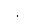

Software (Bus) Triggering
The bus trigger mode is available only from the remote interface. This mode is similar to the manual trigger mode from the front panel, but you trigger the function generator by sending a bus trigger command. The function generator initiates one sweep or outputs one burst each time a bus trigger command is received.· To select the bus trigger source, send the following command.
TRIGger:SOURce BUS· To trigger the function generator from the remote interface (GPIB or RS-232) when the Bus source selected, send the TRIG or *TRG (trigger) command. The front-panelkey is illuminated when the function generator is waiting for a bus trigger.